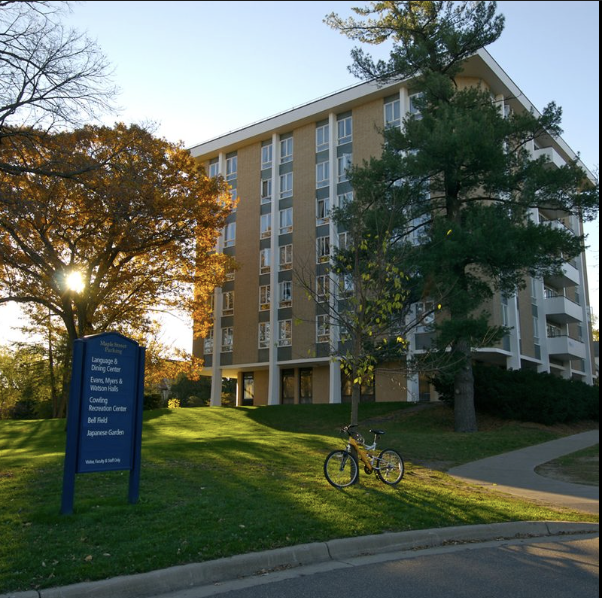
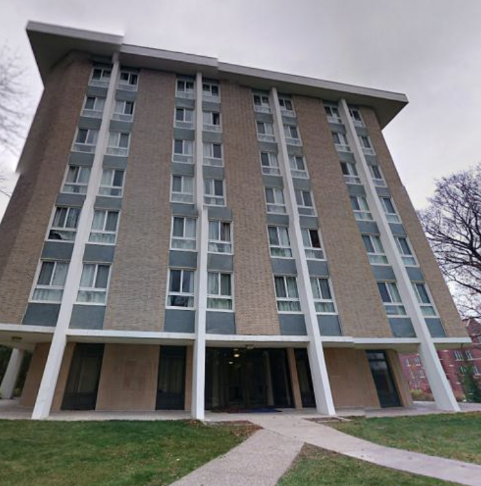

Watson Hall was designed by Minoru Yamasaki in 1966, famous for iconic buildings such as the original World Trade Center’s Twin Towers. His design of Watson represents Humane Modernism, with rounded corners to counter the severe edges and lack of ornamentation. Watson’s octagonal shape is akin to Barcelona’s iconic squares.

Humane Modernism was an architectural movement that took the rigid elements of Modernist architecture, and attempted to incorporate empathy, user comfort, and responsibility within it. As a previous Watson resident, I am unsure of his success.

Watson is certainly a part of the “Modern” era. Check out Watson’s distinctive Japanese Garden below!